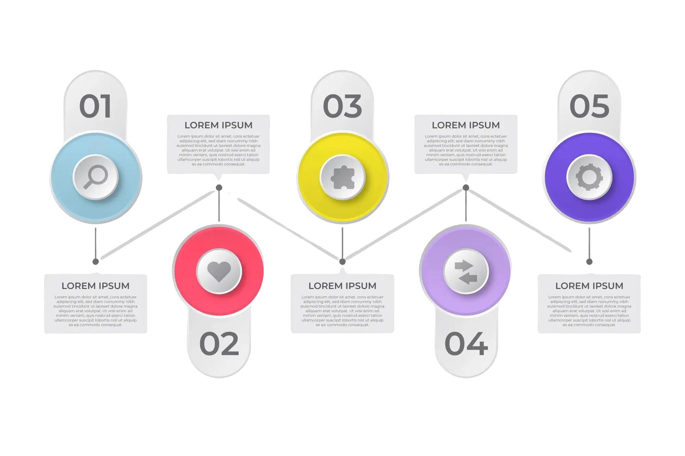

Redesign Iconicli
Iconicli is a dynamic online platform that connects models and brands for seamless collaboration. It acts as a central hub for fostering partnerships between the two.

challenges
The platform's user flow presented significant challenges, particularly when users tried to secure gigs or book time with senior professionals. The process felt cumbersome and lacked intuitive guidance, making it difficult for users to move seamlessly from one step to the next. As a result, users often found themselves frustrated and uncertain about how to achieve their goals on the platform.
Additionally, the platform's overall design and functionality added to this difficulty. Icons and features were not user-friendly, and the complexity of navigation reduced user interest and engagement. These issues combined to create a user experience that felt unappealing and overly complicated, ultimately impacting the brand’s ability to attract and retain users. Improving these areas would make the platform more accessible, enjoyable, and aligned with users’ expectations.
Approach & Solutions
-

User-Centered Research
Through in-depth interviews and usability tests, we identified key pain points. These insights guided our decisions, ensuring each change directly addressed users’ real needs.
-

A Solid Design System
Implementing a unified design system standardized elements across the platform, improving consistency and reducing production time by 10%.
-

Streamlined Booking & Navigation
Simplified pathways and clearer labels reduced the number of clicks, allowing users to reach their goals efficiently.
-

Ongoing Analysis for Sustainable Growth
Regularly reviewing weak spots and evolving the platform’s features ensured continuous improvements, fostering long-term business sustainability.
Key Outcomes
Following the platform’s redesign, user satisfaction scores saw a substantial 24% increase, indicating enhanced overall user experience and engagement.
The redesign reduced the average time users spent completing tasks by 40%, greatly enhancing productivity and ease of use.
Within just the first quarter after the redesign release, digital transactions rose by 15%, reflecting a more streamlined and user-friendly transaction process.